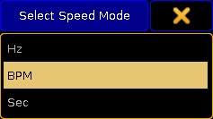
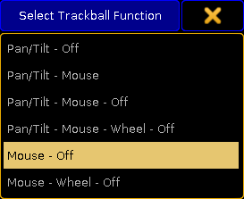
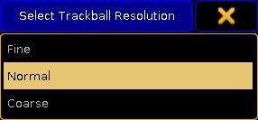
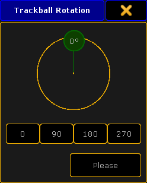
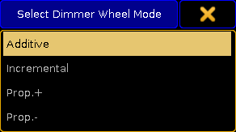
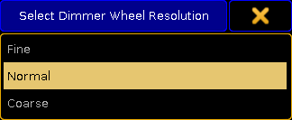
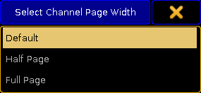
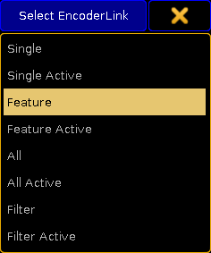

It is the preferred color engine when using the Color Picker or when grabbing a color from a different fixture.
Window Settings
This section keeps all the user settings for the different windows. The settings can be changed here, but it could make more sense to change them in the actual sheets and windows. There you open the options and in the title bar of the options, you can tap the Save to Default button. These are the settings that are stored to default.
Read about the different settings in each of the help pages describing the different windows.
Grand Master & Misc. Keys
This section contains settings for some of the hard keys.
Many of the keys can be disabled, including the Grand Master fader. The keys that can be disabled are: Blackout, Solo, Highlight, Channels Page + (Ch Pg +) and Channel Page - (Ch Pg -).
As mentioned it is also possible to disable the Grand Master fader. This will force the physical fader at full. It is still an option to assign the Grand Master function to one of the executors. If the Grand Master is moved on one of the other executors, then the physical Grand Master will still move. Moving the physical Grand Master will make the fader jump back when it is released.
There is a setting called Link Fader & Button Page, this will always change the Executor Fader and Executor Button pages together, when it is turned On. Then it does not matter if you use the one or the other sets of page keys, they will change to the same page.
The last option here is Blind. It has three different options:
Disabled - This disables the Blind key.
BlindEdit only - This setting only gives access to the BlindEdit mode. You still need to keep the key pressed for a second to enter the BlindEdit mode.
Enabled - This is the default setting. This gives access to both the normal Blind and the BlindEdit mode.
Oops Settings
The Oops key gives access to undo certain things.
It can remember 100 steps backwards.
The oops'able elements are divided into three different sections: General, Views and Programmer.
You can activate if the oops function should use all of these sections or just some of them.
Many users turn off the Views section. Then some of the 100 steps are wasted on view changes.
Store Options
This is where the store options are saved. These are the settings used when storing cues or presets.
This section contains different settings all related to the User (Profile).
MessageBox on all screens - This can be On or Off. When this is On, the message boxes will appear on all screens.
Default MixColor Readout - There are two options here: RGB or CMY. This is used to select the default color system. If you mostly deal with RGB colors or CMY colors, then it is possible to change what sheets and encoders displays.
Speed Mode - Selects the speed mode in Effects, Bitmap Effects and Speed Groups. Tapping it opens the Select Speed Mode pop-up. Here the options are: Hz (Hertz) BPM (Beats Per Minute) Sec (Seconds)

Select Speed Mode pop-up
Trackball Function - Opens the Select Trackball Function pop-up. Here you can select the mode sequence for your trackball when you press the Mouse key. The trackball can have four different modes: Off - no function Mouse - normal trackball mouse function Pan/Tilt - this will move the selected moving lights Wheel - emulates the level wheel

Select Trackball Function pop-up
Trackball Resolution - Opens the Select Trackball Resolution pop-up. This is used to select the default resolution of the trackball. This can also be change on the fly by pressing the (encoder) key and holding it, then selecting one of the resolutions in the pop-up - more about the Encoder key following the link.There are three different resolutions: Fine (0.1% of the range) Normal (1% of the range) Coarse (5% of the range)

Select Trackball Resolution pop-up
Trackball Rotation - This is used to rotate the orientation of the trackball in the pan/tilt mode. It opens a Trackball Rotation pop-up:

Trackball Rotation pop-up
Here you can press the small green circle and rotate the orientation of the trackball. When you are happy, press the "Please" button to confirm the choice.
There are four quick options that allow for fast selection of one out of four quarters on the circle. Pressing the yellow X in the upper right corner cancels any changes.
Dimmer Wheel Mode - Tapping this opens the Select Dimmer Wheel Mode pop-up. This is used to select the wheel mode of the level wheel. There are four options: Additive - This will allow you to use the level wheel to set the value of dimmers. It will keep the individual levels until reaching 0% or 100%. Then it will level them out. For example: fixture 1 has a value of 50 and fixture 2 is at 60. When using the level wheel to take them both up to 100, and then back down, they both go down from 100 at the same time and at the same level. Incremental - This will basically do the same as 'Additive', but it remembers the individual values going beyond 0% and 100%. For example: fixture 1 has a value of 50 and fixture 2 is at 60. When using the level wheel to take them both up to 100, and then back down, fixture 1 will start coming down first and then fixture 2 will follow when fixture 1 is at 90. Prop. + (Proportional positive) - When using the level wheel to turn up the value the individual difference in value will increase. Turning down the values will make all channels reach 0% at the same time. Prop. - (Proportional negative) - When using the level wheel to turn the values up the individual difference in value will decrease. Turning up to 100% will make all channels reach 100% at the same time.

Select Dimmer Wheel Mode pop-up
Dimmer Wheel Resolution - This is used to select the default resolution of the Level Wheel. This can also be change on the fly by pressing the (Encoder) key and holding it, then selecting one of the resolutions in the pop-up - more about the Encoder key following the link.There are three different resolutions: Fine (0.1% of the range) Normal (1% of the range) Coarse (5% of the range)

Select Dimmer Wheel Resolution
Channel Page Width - Opens the Select Channel Page Width pop-up. Here the width of the channel pages can be selected. The options are: Default - This will add the amount of your current console. Half Page (15 faders) - This will scale down a grandMA2 full-size or grandMA2 onPC to match a grandMA2 light or grandMA2 ultra-light. Full Page (30 faders) - This will not add more faders to your grandMA2 light or grandMA2 ultra-light, but it will spread it out as if it was a grandMA2 full-size.

Select Channel Page Width pop-up
This cannot add more faders to your console. If there only are 15 faders then you do not get 30 - but you can scale down a grandMA2 full-size.
Dynamic Channel Page Shows Only Selected - When this is On then the console will only display the selected fixtures in "Dynamic Channel Pages" - read more about the Dynamic Channel Pages in the Channel Pages topic.
At Normal Percent - Here you can define what percent should be considered "At Normal". This is used when the At key is pressed twice.
Single Digit Value - All numeric value input below 10 will be a multiplication of 10; for example: channel 1 at 5 = channel 1 gets value 50.
Max. Program Time - This is the maximum allowed Program time for the Program Time Special Master. Follow this link Time Control to read more about the Program Time.
Max. Exec Time - This is the maximum allowed Executor time for the Executor Time Special Master. Follow this link Time Control to read more about the Executor Time.
Special Fader Buttons - Here you can Enable or Disable the extra buttons above the 100mm faders. Follow this link Master Section to read more about this area.
Disable View Button and View CLI - With this option activated Views and Viewbuttons will not interact with the command line anymore. For example hitting the store button to store a group and realizing you have to change the View to get a group pool would not accidently store a view.
Patch Column Readout is absolute DMX address - This will set the Patch columns to display the absolute DMX address instead of a universe and address split. For example with this On you will see the DMX address "2.1" (universe.address) as "513".
XKeys always for Exec - When this is On, then the X-Keys (below screen 1) will always work as the Executor Buttons. It will not automatically follow the content on the lower part of screen 1.
3D Items Unit - This will change the units in the MA 3D (and Stage View). There are two options: Scale - The visible number will be a scale of the item size. Size(m) - The visible number will be in meters.
CurrentChannelPage - This is this users current Channel Page.
CurrentFaderPage - This is this users current Executor Fader Page.
CurrentButtonPage - This is this users current Executor Button Page.
EncoderLink - The encoder link is used when working in the Fade, Delay and Effect layers. It has several options: Single - Only sets the value for the attribute you change. Single Active - Same as above, but limited to parameters that are already active in programmer. Feature - Sets the value for all attributes in the selected feature. For example if you set a delay time for 'Pan' it will also set the time for 'Tilt'. Feature Active - Same as above, but limited to parameters that are already active in programmer. All - This sets the value for all attributes. All Active - Same as above, but limited to parameters that are already active in programmer. Filter - Sets the value for the attributes selected in the current filter from the filter pool or at filter. Filter Active - Same as above, but limited to parameters that are already active in programmer.

Select Encoder Link pop-up
Programmer Colors - This setting allows to change between two different set of visual color feedback regarding the programmer. The two options are Standard and High Contrast. Read about the in the System Colors topic.
 (encoder) key and holding it, then selecting one of the resolutions in the pop-up - more about the Encoder key following the link.There are three different resolutions:
(encoder) key and holding it, then selecting one of the resolutions in the pop-up - more about the Encoder key following the link.There are three different resolutions: